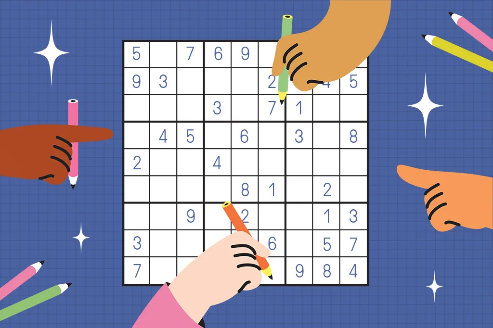
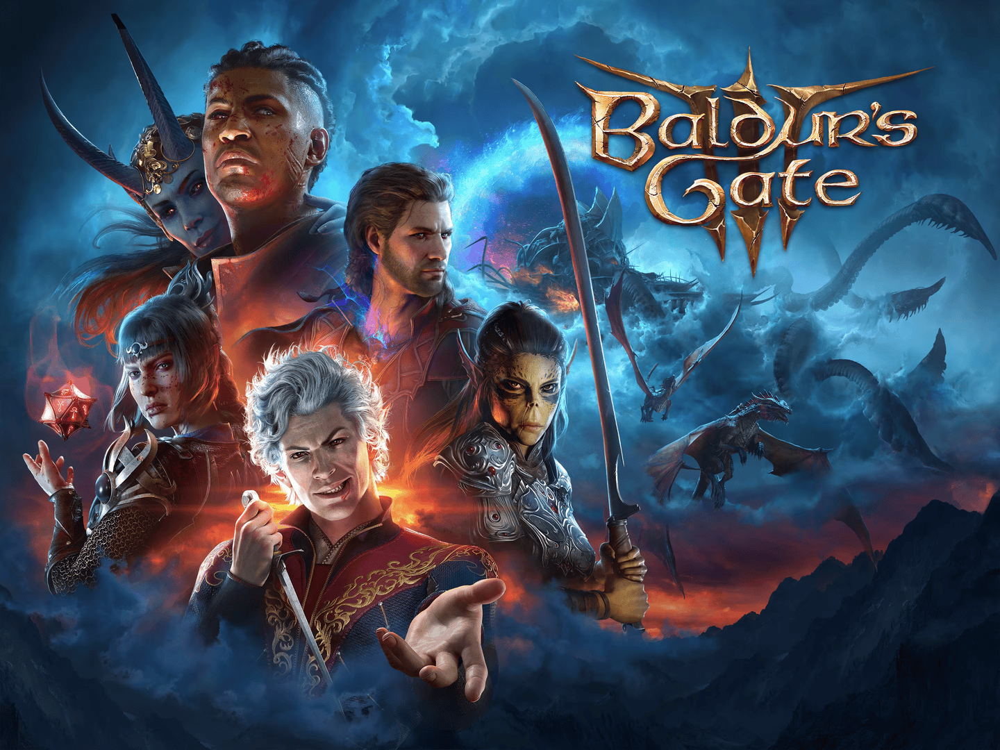

Lógica de Programação e Lógica Geral
Desde pequeno, eu sempre gostei de jogos e matérias escolares que usam lógica. Um exemplo é o Sudoku, por volta dos 10 anos de idade eu ganhei o meu primeiro livro de Sudoku e naquela época eu já gostei do jogo e continuo gostando até hoje.
Continuando em jogos, hoje em dia eu prefiro jogos eletrônicos, mas ainda sim não perdi o gosto pela parte lógica de jogos. Um dos jogos atuais que eu mais gostei de jogar foi o Baldurs Gate 3, um jogo de RPG estratégico em turnos, onde cada movimento, ataque feito ou habilidade usada deve ser bem pensada para que tenha sucesso.


Indo para a escola, eu sempre gostei de Matemática e Química, por isso no Ensino Médio eu acabei cursando o Técnico em Química. Apesar de ter elementos que eu não gostava tanto, como ficar decorando cadeias carbonicas, entre outros. Eu gostava da parte de calculo das análises, que simplificamente podem ser feitas usando somente regra de 3, que na fim das contas, é lógica pura.